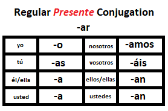
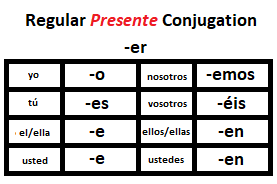

AR Verb Conjugation - April 18 and 20

- cambiar - to change e.g.I changed my shoes for work.
- yo - I
- tú - thou (very close family/friend)
- él/ella - he/her
- usted - you
- nosotros - we
- vosotros - ye (very close family/friends)
- ellos/ellas - they (some boys, all girls)
- ustedes - you (i.e. you guys, y'all)
Where is it? - April 25 and 27
- estar - to be (located) yo estoy, tú estás, él está
- arriba / abajo - above / below
- sobre / debajo de - on / under
- junto - next to
- al lado de - on the side of
- cerca - close to
- encima - on top
- adentro / afuera - inside / outside
What is he like? - May 2 and 4
- ser - to be (the way you are) yo soy, tú eres, él es, nosotros somos, vosotros sois, ellos son
- alto/bajo - tall/short
- rubio/moreno - blond/dark
- gordo/flaco - fat/thin
- tímido/amable
Question words - May 9 and 11
- quien - who
- qué - what
- cuando - when
- donde - where
- por qué - why
- cómo - how
- cuanto - how many
Regular Er/Ar verbs - May 16 and 18

- creer - believe
- saber - know
- deber - should/must
- mirar - look
- hablar - talk
- tocar - touch/play
Popular, but irregular verbs - May 23 and 25
- ir - go (voy, vas, va, vamos, vais, van)
- tener - have (tengo, tienes, tiene, tenemos, tenéis, tienen)
- venir - come (vengo, vienes, viene, venemos, venís, vienen)
- hacer - make/do (hago, haces, hace, hacemos, hacéis, hacen)
- poner - put/place (pongo, pones, pone, ponemos, ponéis, ponen)
- poder - can (puedo, puedes, puede, podemos, podéis, pueden)
- querer - want (quiero, quieres, quiere, queremos, queréis, quieren